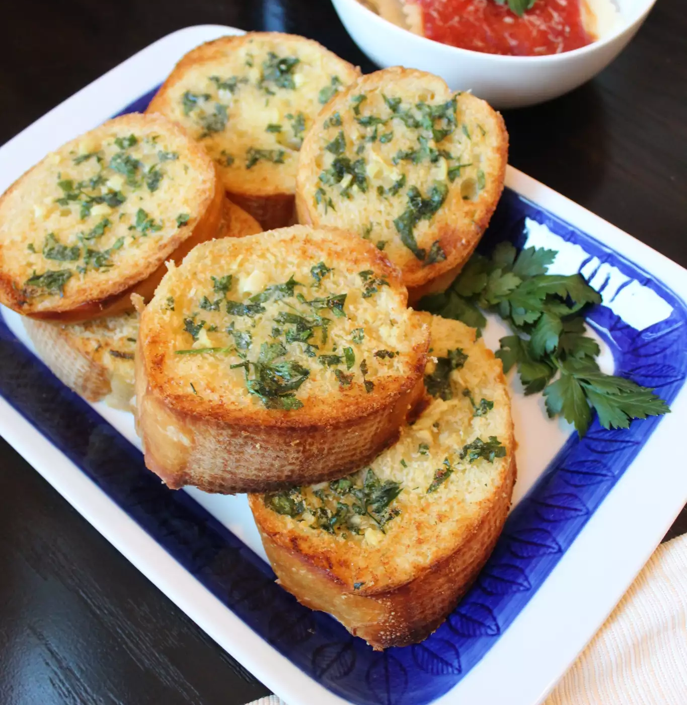

Homemade Garlic Bread
Description
| If you're a garlic lover this garlic bread recipe's for you! Garlic, butter, olive oil, and freshly baked bread-what else can you ask for? Try this recipe today--you won't regret it! |
Ingedients
|
Steps
|